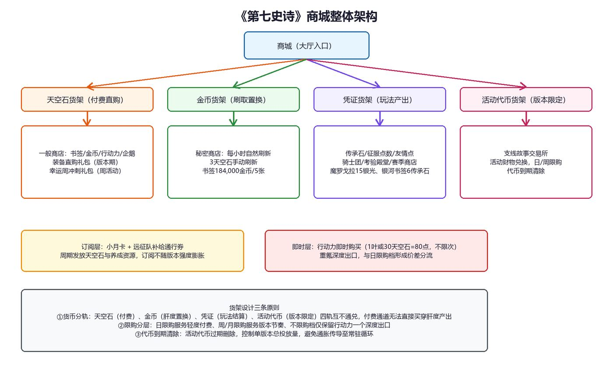

一．背景说明
1.1游戏简介
| 维度 | 内容 |
|---|---|
| 游戏类型 | 2D回合制策略RPG（速度条出手+四人对战），手机游戏 |
| 核心循环 | 资源获取→英雄收集/养成→PVE/PVP战斗验证（讨伐、迷宫、竞技场结算等） |
| 核心玩法 | 以讨伐、深渊、迷宫等PVE养成为基础支撑，以竞技场与RTA赛季制PVP为长线目标 |
| 商业模式 | 免费游玩+内购模式；付费大头为体力（叶子）购买与装备获取 |
| 付费心智 | 不付费可正常游玩；付费主要用于购买行动力以延长当日有效游玩时长，并兑换抽卡资源 |
1.2拆解目的说明
商城是《第七史诗》商业化系统的核心组成。这款游戏商店多、货币也多（天空石、金币、传承石、征服点、友情点、活动代币并存），因此本篇的分析重点不在"卖什么"，而在"每家商店用什么货币、卖给谁、限量怎么定"。下文先梳理各商店的规则，再用统一的兑换比例和玩家分层的获取数据做定量补充，为商业化系统设计积累可借鉴的思路。
1.3名词解释
在进入付费分析之前，先对本篇涉及的术语给出口径定义：
| 术语 | 定义 |
|---|---|
| 天空石 | 基准货币，除充值外亦可通过竞技场结算、任务、活动等日常活跃产出；用于购买书签、行动力、金币等 |
| 圣约书签 | 常规召唤（抽卡）所需资源，1书签=1抽 |
| 银河书签 | 限定召唤所需资源 |
| 生命之叶（叶子） | 行动力道具，1叶=80行动力，兼作部分关卡货币 |
| 行动力 | 讨伐/刷取类玩法的入场资源，自然恢复15点/小时，每日约360点 |
| 魔罗戈拉 | 技能强化通用素材，传承石商店15银光/个、周限购 |
| 传承石（银光/金光） | 传承石商店的兑换凭证，考验殿堂等玩法产出 |
| 征服点数 | 竞技场战斗产出的兑换凭证 |
| 友情点 | 好友互赠行为产出的兑换凭证 |
| 骑士团徽章 | 骑士团玩法产出，周结算发放 |
| 智慧之眼/命运之眼 | 考验殿堂双周结算产出，用于兑换专属装备 |
| 星辉纪念硬币 | 星座考验玩法产出的兑换硬币，在交易所兑换星群商品，商品约每3个月更新并重置 |
| 秘密商店 | 以金币置换稀有资源的商店，每小时自然刷新，可用3天空石手动刷新 |
| 老练企鹅 | 英雄升级经验道具 |
| 旗帜 | 竞技场相关资源，每日限量直购 |
1.4养成逻辑介绍
在第七史诗的价值体系下，玩家的付费欲望主要来自两处：抽卡资源（书签）产出不足，与装备刷取资源（行动力）产出不足。该作养成验证的核心是装备词条的随机性，装备出货率与刷取次数（体力消耗）强绑定，行动力因此成为付费转化为战力的唯一通路：购买叶子的实质是延长当日有效游玩时长，而非直接购买战力。唯一能花钱直接买到成品装备的是装备直购礼包，约一个版本上架一次，相当于花钱省去整段刷取时间。付费与免费玩家共享同一套随机性与保底结构，付费买到的是时间、次数与确定性，而非更好的骰子。
二．付费系统核心结构
2.1物资价值——统一兑换比例
以人民币与天空石为双基准，全部物资的兑换关系如下：
| 货币1 | 货币2 |
|---|---|
| 1人民币 | 10天空石（无折扣官方定价） |
| 1人民币 | 20天空石（首充双倍） |
| 95天空石 | 1抽（书签直购口径） |
| 950天空石 | 10抽（十连召唤口径） |
| 30天空石 | 80行动力（即时购买，不限次） |
| 100天空石 | 40行动力（商店限量档，每日1次） |
| 1生命之叶 | 80行动力（商店限量档每日3次可购，亦可即时兑换） |
| 120天空石 | 250,000金币（商店直购） |
| 184,000金币 | 5圣约书签（秘密商店刷出价） |
| 1圣约书签 | 1抽 |
2.2物资锚定价值
由兑换比例可以算出所有物资折合多少钱。玩家社区习惯用"折合多少抽"衡量一件商品值不值，就是因为抽卡价格是整套比价体系的基准：
| 物资 | 锚定价值 | 说明 |
|---|---|---|
| 1抽 | 95天空石（约￥9.5） | 全服性价比基准 |
| 1行动力（即时档） | 0.375天空石（约￥0.04） | 重度玩家日成本计价器 |
| 1行动力（商店档） | 2.5天空石（约￥0.25） | 限量档单价劣于即时档约6.7倍 |
| 1叶子 | 80行动力（约￥3） | 时长道具的标准单位 |
| 限定UP保底（121抽） | 11,495天空石（约￥1,149.5） | 一个当期UP角色的完全成本上限 |
2.3商品系统简介
常驻与周期性商品的全景如下。本表不列活动礼包的浮动定价，仅收录价格结构稳定的常驻商品：
| 名称 | 价格口径 | 周期/限购 | 权益形态 |
|---|---|---|---|
| 天空石充值 | 6~648元各档，首充双倍 | 不限购 | 基准货币 |
| 小月卡 | 订阅制，周期发放天空石 | 订阅周期 | 在线时长 |
| 远征队补给通行券 | 天空石直购，累积点数发放 | 版本周期 | 养成资源+便利 |
| 书签十连礼包 | 950天空石 | 不限购 | 即时抽卡权 |
| 行动力商店档 | 100天空石=40点 | 每日1次 | 在线时长 |
| 行动力即时档 | 30天空石=80点 | 不限购 | 在线时长 |
| 老练企鹅 | 1,000天空石 | 每周5个 | 养成加速 |
| 旗帜 | 100天空石 | 每日1个 | 竞技场资源 |
| 装备直购礼包 | 版本期上架 | 约一个版本一次 | 确定性 |
| 幸运周冲刺礼包 | 活动期上架 | 周活动 | 综合 |
三．系统拆解
3.1系统框架
商城不是单一货架，而是由多家商店组成，各家商店用的货币不同。按结算货币可以分成四类：天空石商店（天空石可充值，也能靠日常活跃攒出来）、金币商店（金币来自日常刷取）、凭证商店（征服点数、友情点等玩法产出的代币）、活动代币商店（只在活动期间开放）。四种货币互不通用——天空石买不到凭证商店里的东西，肝度产出的资源也就不会被付费直接买走。简单来说：付费买到的是时长和确定性，资源与概率主要还是靠游玩获得。

图3-1《第七史诗》商城整体架构
3.2商城系统规则与分析
3.2.1核心付费模块对比表
按付费方式，商城的付费模块可以分成四类。四类的定位、机制和面向的玩家各不相同，合在一起覆盖了全部付费场景：
| 特性维度 | 限时礼包型 | 常驻直购型 | 凭证兑换型 | 订阅型 |
|---|---|---|---|---|
| 核心定位 | 集中付费转化，制造消费高峰 | 稳定比价货架，随时补缺 | 玩法产出的确定性出口 | 留存型付费，建立登录惯性 |
| 目标用户 | 中重度玩家、回流玩家 | 全部付费玩家 | 全体玩家（按玩法投入分配） | 轻度付费玩家 |
| 核心机制 | 限时上架、稀缺数量 | 固定价、日/周限购 | 凭证限购、周期结算 | 周期发放、订阅制 |
| 货币体系 | 天空石 | 天空石 | 传承石/征服点/友情点/活动代币 | 人民币订阅 |
| 与充值关系 | 隔离或弱关联 | 直接关联 | 不关联（肝度产出） | 直接关联 |
| 设计意图 | 制造紧迫感、控制消费节奏 | 比价透明、维持付费信任 | 保肝度价值、防付费买穿 | 稳定现金流、对抗活跃衰减 |
3.2.2常驻商店对比表
| 商店名称 | 核心定位 | 主要货币 | 核心规则亮点 | 目标用户 |
|---|---|---|---|---|
| 一般商店 | 付费直购主货架 | 天空石 | 书签、金币、行动力、企鹅、旗帜的固定价货架；首充双倍 | 全部付费玩家 |
| 秘密商店 | 汇率枢纽：肝度置换抽卡资源 | 金币（天空石刷新） | 每小时自然刷新；3天空石手动刷新；书签184,000金币/5张 | 有金币储备的全体玩家 |
| 传承石商店 | 技能材料的稳定出口 | 银光/金光传承石 | 魔罗戈拉15银光/个；金光限换银河书签；周限购 | 全体玩家 |
| 征服点数商店 | PVP产出的日常出口 | 征服点数 | 30点=40体力（每日3次）；万能强化石；日/周刷新 | 竞技场活跃玩家 |
| 友情商店 | 社交行为的硬性价值 | 友情点 | 100点=40体力；日刷新 | 全体玩家 |
| 骑士团商店 | 组织归属的实物化 | 骑士团徽章 | 魔罗戈拉与转换石；周结算 | 公会活跃玩家 |
| 迷宫商人 | 探索行为的惊喜出口 | 天空石 | 周期性开放、固定层出现；稀有道具 | 迷宫探索玩家 |
3.2.3玩法商店分类表
| 商店名称 | 专属货币 | 货币来源 | 刷新/重置周期 | 特殊规则 | 设计意图 |
|---|---|---|---|---|---|
| 考验殿堂交易所 | 智慧之眼/命运之眼 | 考验殿堂双周结算 | 双周 | 专属装备兑换，属性随机 | PVP/PVE表现折算为确定性装备 |
| 征服点数商店 | 征服点数 | 竞技场战斗 | 每日/每周 | 体力日限3次 | 激励竞技场参与 |
| 友情商店 | 友情点 | 好友互赠 | 每日 | 体力日限兑换 | 赋予社交硬性价值 |
| 骑士团商店 | 骑士团徽章 | 骑士团玩法 | 每周 | 周结算发放 | 强化组织归属感 |
| 星座考验交易所 | 星辉纪念硬币 | 星座考验玩法 | 商品每3个月更新并重置 | 兑换星群商品 | 长线稀缺资源的周期性投放 |
| 赛季商店 | 赛季代币 | 世界竞技场赛季结算 | 赛季 | 命运之眼、星辉纪念硬币、魔罗戈拉等稀缺资源限购上架，商品按赛季重置 | 赛季周期拉长付费与活跃节奏 |
| 活动交易所 | 活动财物 | 支线/活动关卡 | 活动期 | 代币到期清除 | 控制单版本总投放量 |
3.2.4订阅与礼包对比表
| 对比项 | 小月卡 | 远征队补给通行券 | 幸运周冲刺礼包 | 装备直购礼包 |
|---|---|---|---|---|
| 付费形态 | 订阅制 | 天空石直购 | 周活动礼包 | 版本期直购 |
| 收益结构 | 周期发放天空石 | 累积点数逐档发放 | 活动期综合资源 | 成品装备（确定性） |
| 核心用户 | 轻度付费玩家 | 活跃玩家 | 回流与活跃玩家 | 重度玩家 |
| 设计意图 | 建立登录惯性 | 绑定版本活跃，构成石头消耗去向 | 周活跃钩子 | 重氪确定性出口，约一个版本一次 |
需要单独指出的是远征队补给通行券的性质：它用天空石购买而非人民币解锁，因此不是现金付费点，而是天空石的一个稳定花费去向——玩家的石头除了抽卡，多了一个"换养成资源"的确定用途。它与书签共用同一笔石头预算，玩家每个版本都要在"抽卡还是换养成资源"之间做分配。这一设计把版本活跃目标与石头消耗绑在一起，同时避免了直接卖资源对肝度体系的冲击。
3.3系统设计目的
1.商业变现与收益保障：多类商店覆盖了不同玩家的付费动机，是维持长线运营的核心收入来源之一。
2.驱动游戏内循环与玩家目标：日限购培养登录习惯，周/版本礼包制造目标节点，凭证商店把玩法参与转化为可见回报。
3.增强玩家体验和留存：订阅层以周期收益对抗活跃衰减，活动代币与赛季货币把版本内容变成可期待的回报周期。
4.维持游戏经济与资源平衡：四轨货币互不通兑，活动代币到期清除，凭证限购控制资源流出节奏，付费无法直接买穿肝度产出。
3.4系统设计思路
3.4.1顶层目标：解决F2P模式的运营问题
核心命题是让不花钱的玩家留存，同时让花钱的玩家满足并持续投入。对免费玩家：保底封顶（UP池121抽）与刷商店慢路径提供可见、可期但缓慢的成长路径，零氪月产出约70~119抽，可稳定追限定。对付费玩家：提供时长（行动力）、抽数与确定性（直购装备）三类权益，将投入转化为进度优势而非战力碾压。
3.4.2核心设计原则：分层、心流与感知价值
3.4.2.1分层满足原则。按付费能力分层，各层在商城中承担不同角色：
| 付费能力 | 特征 | 商城角色 | 商业化内容 |
|---|---|---|---|
| 零氪玩家 | 以时间换资源，对付费高度敏感，极度注重性价比 | 凭证货架与秘密商店的主力，肝度价值的兑现者 | 玩法商店免费兑换；秘密商店金币置换书签 |
| 微氪玩家 | 注重性价比，愿意用活跃弥补付费空缺 | 订阅层的核心转化对象 | 小月卡、补给通行证、日限购小额档 |
| 中氪玩家 | 精打细算，为明确目标集中消费 | 直购货架与限时礼包的目标用户 | 书签直购、行动力即时档、限时礼包 |
| 重氪玩家 | 付费感性，追求确定性与全收集 | 深度出口的唯一承接口 | 行动力即时档不限购、装备直购礼包、拉满订阅 |
结合3.5的定量演算可见，四层的商城角色与获取节奏互为表里：零氪全勤月约119抽、约1个月锁定一个限定UP；订阅层在免费产出之上叠加约6,000天空石/月；重氪通过即时行动力与装备直购礼包获得当期吃满的深度出口。
3.4.2.2心流和目标驱动。日限购（行动力商店档、旗帜、企鹅周限）控制每日资源上限并培养登录习惯；周礼包与版本礼包制造消费高峰；天空石通道本身不限购——充值无上限，且可随时转化为抽卡与即时行动力，让愿意多花的玩家有处可花，限购则施加在具体商品档位上，不挡付费通道。
3.4.2.3感知价值。锚定效应：95天空石/抽是全服比价基准，一切礼包以"折合多少抽"被玩家度量；捆绑销售：周期礼包将书签、企鹅、金币等多类养成资源组合上架，以组合价提升整组感知价值（具体组合以版本货架为准）；价差分流：行动力商店档（100天空石=40点）与即时档（30天空石=80点）单价相差约6.7倍，限量档服务轻度、即时档服务重度，两类人群各有入口；情感价值：商品与IP联动、限定专属装备绑定，将消费从功能性延伸到情感性。值得注意的是，该作没有用"模糊货币感"的手段刺激消费，反其道而行：所有兑换比例公开可算，玩家很容易算出一件商品"值不值"，用比价透明换取付费信任。
3.4.3商品矩阵与协同作用
各类商品构成引导玩家"入门—转化—深化—爆发"的完整链条：
| 商品类型 | 设计目的 | 服务玩家类型 | 心理机制 |
|---|---|---|---|
| 免费/凭证商品 | 保肝度价值，培养登录习惯，建立价值认知 | 全体玩家，尤其是零氪 | 公平感，希望，时间兑换 |
| 订阅服务 | 低门槛转化，保证长期活跃与稳定现金流 | 微氪及以上玩家 | 性价比感知，延迟满足 |
| 直购商品 | 满足明确目标的确定性需求 | 中氪及以上玩家 | 确定性，即时满足 |
| 凭证兑换 | 把玩法投入折算为确定性资源 | 全体玩家按玩法投入分配 | 投入回报可期 |
| 限时/直购礼包 | 稀缺性与版本节点集中释放消费需求 | 中重度玩家，回流玩家 | 稀缺性，冲动消费 |
3.4.4经济与资源平衡
货币四轨分立：天空石锚定人民币，并由充值与日常活跃双渠道供给；金币由肝度产出，并受体力总量约束；凭证与活动代币不可通兑。付费用的天空石买不到凭证商店里的商品，肝度产出因此保值。限购是控制节奏的关键：日/周/月限购控制资源产出速度，活动代币到期清除控制单版本总投放。真正不限购的是天空石这一付费通道本身：充值没有上限，而天空石可以随时转化为即时行动力与抽卡次数，体力档的"不限购"正来源于此。限购则施加在具体商品档位上——商店限量档每日1次、企鹅每周5个、旗帜每日1个、金币直购礼包限量。不限量的货币通道配上层层限购的商品档位，是一组刻意安排的对照：前者让愿意花大钱的玩家始终有处可花，后者保住"资源主要靠肝度获得"的主体地位。两者的边界，就是这款游戏付费设计的取舍线。
值得单独标注的是书签的主流获取路径：圣约书签与神秘书签的获取大头并非直购，而是秘密商店的金币刷取——以圣约书签为例，184,000金币/5张的商店刷出价是绝大多数玩家的主获取渠道，玩家以讨伐等肝度行为积累金币，再通过高频刷新商店把金币存量转化为抽数，3.5.1的零氪月口径中秘密商店刷取约50抽、为单项最大来源。除重氪玩家外，直接以天空石按95/抽购买书签的行为较少，直购定价的实际作用更接近价格锚点与重氪玩家的即时补缺通道：它锚定"折合多少抽"的比价体系，同时把主流获取路径留在金币轨上——前面说的"付费买时长和确定性、资源与概率靠肝度"，在书签上体现得最直接。
3.5定量演算：投放、分层与获取节奏
3.5.1月免费资源投放总量（零氪口径）
以自然月为周期，按零氪全勤状态拆解免费资源投放：
| 项目类型 | 数量 | 折合抽数 |
|---|---|---|
| 签到、日常、支线、网页活动、迷宫、宝箱 | 约35抽 | 35 |
| 竞技场（3,000分档）+日常+圣域 | 约3,500天空石 | 36 |
| 秘密商店刷取（金币口径） | 约50抽 | 50 |
| 月合计 | — | 约119抽（随肝度浮动，休闲口径约70抽） |
3.5.2各类用户的付费资源比较
比较基础为零氪全勤（约119抽/月），各付费深度的月资源总和与价值等量如下：
| 玩家类型 | 月资源总和 | 月物资价值等量 | 单日产出等量 |
|---|---|---|---|
| 零氪（全勤） | 约119抽 | ￥1,130.5 | ￥37.7 |
| 零氪（休闲） | 约70抽 | ￥665 | ￥22.2 |
| 小月卡 | 119抽+约6,000天空石 | ￥1,730.5 | ￥57.7 |
| 中氪（月付两个最高档） | 119抽+12,960天空石 | ￥2,462.1 | ￥82.1 |
| 重氪（月付十个最高档） | 119抽+64,800天空石 | ￥7,628.5 | ￥254.3 |
结构上，付费深度不改变免费资源的获取量，只做加法；零氪与重氪的月等量差距约6.7倍，原因在于本作的付费增量主要购买行动力与抽数，而非直接购买战力。但月资源的差距温和，不等于实际战力差距也温和：换算成刷取次数后，重氪档位的差距会明显放大（见3.5.3）。
3.5.3付费内容能给玩家带来的实际战力与收益
行动力是付费转战力的唯一通路，其收益受两道约束——次数约束（体力换刷取次数）与随机约束（装备词条仍随机）。按龙13单次22点行动力估算：
| 付费档位 | 日增行动力 | 折合讨伐次数 | 实际收益性质 |
|---|---|---|---|
| 商店限量档（100天空石） | 40点 | 约1.8次 | 小额补缺，性价比最低但门槛低 |
| 即时档（30天空石） | 80点 | 约3.6次 | 重度玩家主力档，单价最优 |
| 即时档拉满（1,000天空石） | 约2,667点 | 约121次 | 日成本约￥100，收益仍受词条随机约束 |
结论：付费买到的是"更多次投掷骰子的机会"，而非"更好的骰子"。装备出货期望与刷取次数强绑定，因此重氪的战力优势来自累积速度，其上限仍由词条随机性与金币沉淀封顶。
由此形成该作付费差距的分段结构：零氪、微氪与中氪之间的差距被限购与随机性共同压平——微氪与中氪的月资源增量有限（见3.5.2），行动力增量受日限购封顶，多出的刷取次数又受词条随机稀释，实际战力差距有限；重氪则经由不限购的即时档把日刷取次数推至约121次，为自然恢复口径（360点约16次）的约7倍，装备积累速度与高词条装备的持有概率显著拉开。低氪度与中氪度拉不开太大差距、重氪能拉开较大差距，这正是"限购压住了小额付费的增量、不限购给大额付费留了深度"共同作用的结果。
3.5.4各类用户获取理想角色所需花费的时长
以限定UP池121抽硬保底为演算基准，各付费深度锁定一个当期UP角色的月数如下：
| 玩家类型 | 月抽数 | 锁定121抽所需月数 |
|---|---|---|
| 零氪（休闲） | 70 | 1.7 |
| 零氪（全勤） | 119 | 1.0 |
| 小月卡 | 182 | 0.67 |
| 中氪（月付两个最高档） | 255 | 0.47 |
| 重氪 | 可当期吃满保底 | 小于0.1 |
零氪全勤约一个月锁定一个UP角色，这一节奏是免费体验与付费深度的平衡点：既保证零氪可追限定，又使愿意付费的玩家买到"当期限定立即到手"的时间差。
四．市场情况及产品定价分析
4.1游戏货币定价体系分析
充值档位覆盖6~648元，无折扣官方定价恒为1元=10天空石，首充双倍为一次性拉新手段。全部常驻商品的等量价值均可由天空石精确折算，比价透明度高；付费深度的调节不依赖折扣，而依赖限购结构（日限、周限、版本限）与礼包上新节奏。这一体系下，玩家对"氪金值不值"的判断成本极低，长期有利于付费信任的维持。
4.2游戏限定角色价格
以硬保底计算，一个当期限定UP角色的完全成本为121抽，折合11,495天空石，约￥1,149.5。对比本作零氪月产出约119抽，一个限定角色的免费获取周期约一个月，定价与免费节奏的比值约为1:1，属于长线运营产品中较宽松的比例。
五．总结
商城系统靠"商店按货币分轨、商品按消费深度分层"的设计，同时带动玩家活跃与付费转化，最终形成"活跃—留存—付费"的正向循环。四种货币互不通用，付费买到的只有时长、抽数与确定性，肝度产出的资源与凭证因此保值；分层商品让不同消费深度的玩家都有对应入口，零氪有保底与慢路径兜底，重氪有即时行动力与直购礼包作为深度出口。定量口径上，零氪全勤月约119抽、约1个月锁定一个限定UP，定价与免费节奏的比值约1:1；付费差距呈分段结构——零氪与微氪、中氪之间被限购与随机性压平、拉不开明显差距，重氪则经由不限购行动力档把日刷取次数推至自然恢复的约7倍，形成显著的头部差距，差距来自累积速度而非数值碾压。95天空石/抽的价格基准公开可算，加上概率公示，共同维持了玩家对付费的信任——这也是该作长期运营中付费观感较好的结构原因。
六．对游戏设计商业化的启示
其一，先定规则再摆商品：先确定哪些资源能直接买、哪些必须靠肝度获得，再设计商店，避免付费直接买穿养成进度，导致通胀与流失。其二，同一权益设多档单价：以行动力两档为例，价差与限购共同把轻度与重度玩家分流，单一价格无法同时服务两类人群。其三，用保底与慢路径划定免费玩家的边界：能算出来的获取成本是付费信任的基础，零氪有确定路径，付费才会被理解为买时间而非买门槛。其四，限档位不限通道：天空石这一付费通道保持不限量，保证重氪有处可花；具体商品档位则层层限购，保住肝度产出的主体地位——重氪的深度全部经由天空石转化实现（抽卡、即时行动力），而不是直接买断资源。其五，合规前置：概率公示、不设赌博式开箱、不卖数值碾压，要在设计商店时就作为前提条件确定下来；即时行动力不限购，则需要以未成年人防沉迷的限时限额作为外部约束。
附：数据来源说明
本文为个人作品集用途的拆解分析，游戏内数值以游戏内实际公示为准。